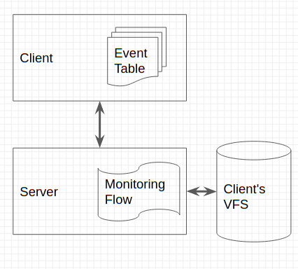
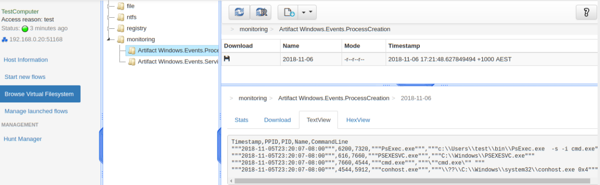

Event Queries and Endpoint Monitoring
In previous posts we have seen how Velociraptor can run artifacts to collect information from hosts. For example, we can collect WMI queries, user accounts and files.
However it would be super awesome to be able to do this collection in real time, as soon as an event of interest appears on the host, we would like to have that collected on the server. This post describes the new event monitoring framework and shows how Velociraptor can collect things such as event logs, process execution and more in real time.
Why monitor endpoint events? Recording end point event information on the server gives a bunch of advantages. For one, the server keeps a record of historical events, which makes going back to search for these easy as part of an incident response activity.
For example, Velociraptor can keep a running log of process execution events for all clients, on the server. If a particular executable is suspected to be malicious, we can now go back and search for the execution of that process in the past on the infected machine (for establishing the time of infection), as well as search the entire deployment base for the same binary execution to be able identify lateral movement and wider compromises.
How are events monitored?
Velociraptor relies heavily on VQL queries. A VQL query typically produces a single table of multiple rows. For example, the query:
SELECT Name, CommandLine FROM pslist()
Returns a single row of all running processes, and then returns.
However, VQL queries do not have to terminate at all. If the VQL plugin they are calling does not terminate, the VQL query will continue to run and pass events in partial results to the VQL caller.
Event queries are just regular VQL queries which do not terminate (unless cancelled) returning rows whenever an event is generated.

Consider the parse_evtx() plugin. This plugin parses an event log file and returns all events in it. We can then filter events and return specific events of interest. The following query returns all the service installation events and terminates:
The query specifically looks at the 7045 event “A service was installed in the system”
Lets turn this query into an event query:
The watch_evtx() plugin is the event watcher equivalent of the parse_evtx() plugin. If you ran the above query, you will notice that Velociraptor does not terminate. Instead it will show all existing service installation events in the log file, and then just wait in the console.
If you then install a new service (in another terminal), for example using winpmem.exe -L, a short time later you should see the event reported by Velociraptor as in the above example. You will notice that the watch_evtx() plugin emits event logs as they occur, but Velociraptor will try to group the events into batches. The max_wait flag controls how long to wait before releasing a partial result set.
Employing event queries for client monitoring
The above illustrates how event queries work, but to actually be able to use these we had to implement the Velociraptor event monitoring framework.
Normally, when we launch a CollectVQL flow, the client executes the query and returns the result to the flow. Clearly since event queries never terminate, we can not run them in series (because the client will never be able to do anything else). The Velociraptor client has a table of executing event queries which are run in a separate thread. As these queries return more results, the results are sent back to the server.
We also wanted to be able to update the events the clients are monitoring on the fly (without a client restart). Therefore we needed a way to be able to update the client’s event table. This simply cancels current event queries, and installs new queries in their place.
As events are generated by the Event Table, they are sent back to the server into the Monitoring flow. This flow is automatically created for each client. The monitoring flow simply writes events into the client’s VFS. Therefore, events are currently simply recorded for each client. In future there will be a mechanism to post process event and produce alerts based on these.
Process Execution logs
One of the most interesting event plugins is the WMI eventing plugin. This allows Velociraptor to install a temporary WMI event listener. For example, we can install a listener for new process creation:
The wmi_events() plugin installs an event listener into WMI and therefore receives events from the OS about new process creation events. Unfortunately these events, do not contain a lot of information about the process. They only provide the ProcessID but not the full command line. The above query executes a second subquery to retrieve the command line for the process. We also parse the timestamp and convert it into a more standard epoch based timestamp.
Specifying what should the client monitor
We have seen how Event VQL queries can generate events for the server. However, this is difficult for Velociraptor’s end users to directly use. Who can really remember the full query?
As we have shown previously, Velociraptor’s Artifacts are specifically designed to solve this issue. Artifacts encapsulate a VQL query so it can be called by name alone.
For example, the Windows.Events.ProcessCreation artifact encapsulates the above query in one easy to remember name.
To specify what clients should collect, users simply need to name the event artifacts that should be monitored. Currently this is done in the server configuration (in future this may be done via the GUI).
The event table version should be incremented each time the monitored event list is updated. This forces all clients to refresh their event tables.
How does it look like in the GUI?
The Monitoring flow simply writes files into the client’s VFS. This allows these to be downloaded and post processed outside of Velociraptor.
Conclusions
Adding event monitoring to Velociraptor is a great step forward. Even just keeping the logs around is extremely helpful for incident response. There is a lot of value in things like process execution logging, and remote event log forwarding. We will cover some more examples of event log monitoring in future blog posts. Until then, have a play and provide feedback as usual by filing issues and feature requests.